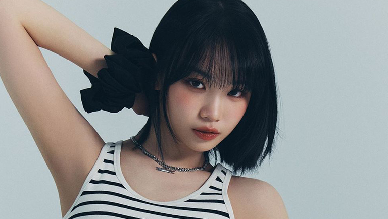
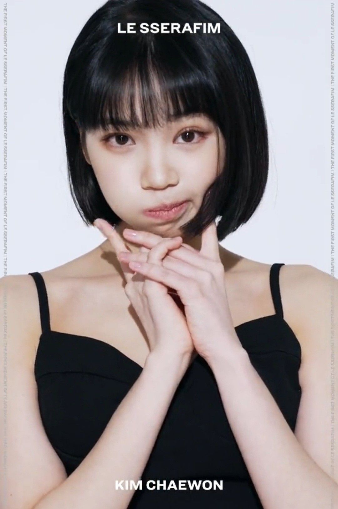
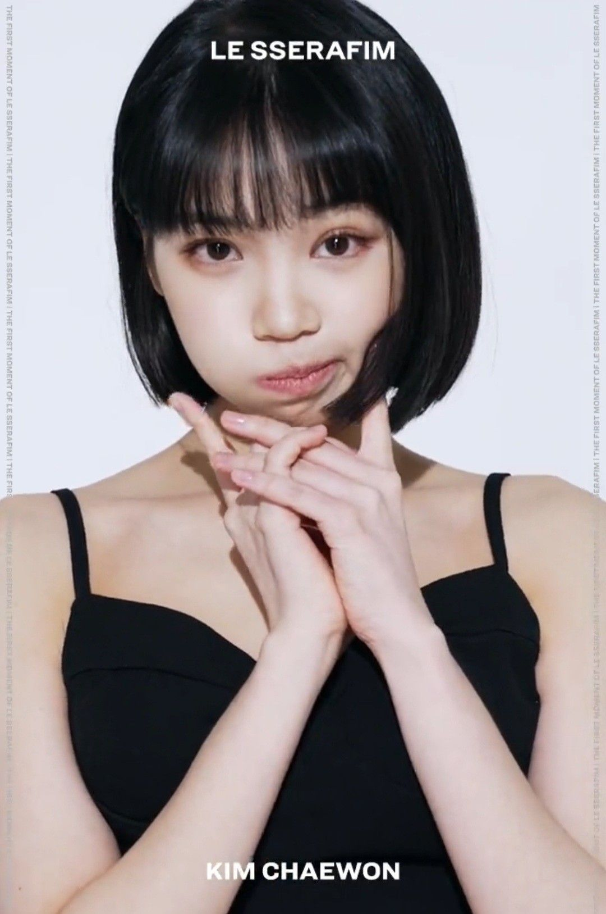
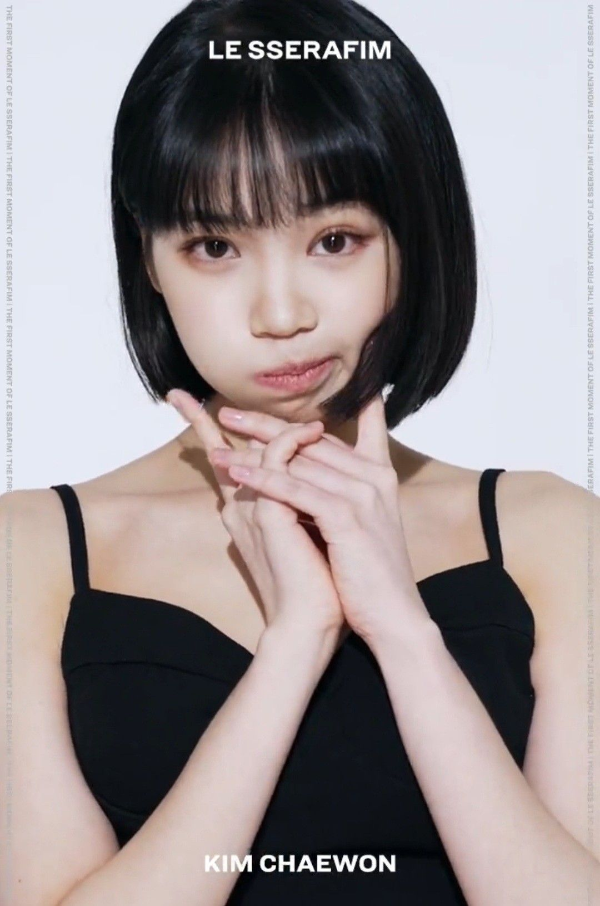

Samantha Kim
Hey, I'm Kim Chaewon, and I'm all about turning imagination into reality through my journey in music and performance. Born and raised in the vibrant streets of Gangnam, Seoul, I've always had a deep appreciation for the arts, thanks in part to my mom, the talented theater actress Lee Ran-hee.
My passion for performance blossomed early on, with my debut appearance in KBS' Korea Children's Song Contest back in 2012. Even at a young age, I felt a spark within me whenever I stepped onto the stage, a feeling that would only grow stronger as I ventured further into the world of entertainment.
As I navigated through my formative years, music became my sanctuary—a place where I could express myself freely and connect with others on a profound level. Inspired by the likes of legendary performers and modern-day icons alike, I knew that I wanted to make a difference through my art, to leave a mark that would resonate long after the final note faded away.
In 2018, the opportunity of a lifetime came knocking when I joined the ranks of Iz*One, a groundbreaking girl group born from the fierce competition of Produce 48. Representing Woollim Entertainment alongside other talented trainees, I poured my heart and soul into every performance, every rehearsal, and every interaction with fans. Together, we soared to incredible heights, capturing the hearts of millions with our music and magnetic stage presence.
From the exhilarating rush of our debut with "La Vie en Rose" to the bittersweet moments of our final concert, One, The Story, every chapter of my journey with Iz*One holds a special place in my heart. It was a whirlwind of emotions, filled with laughter, tears, and countless memories that I will forever cherish.
But as one chapter closes, another begins, and I find myself embarking on a new adventure as the leader of Le Sserafim. Joined by former Iz*One member Sakura Miyawaki, I'm thrilled to dive headfirst into this exciting new chapter of my career. With Source Music at our backs, we're ready to shake up the industry with our fresh sounds, dynamic performances, and unwavering passion for music.
Beyond the glitz and glamour of the stage, I'm just a girl with big dreams and an even bigger heart. Whether I'm composing melodies in the studio, perfecting choreography in the rehearsal room, or simply sharing a laugh with my fellow members, I'm fueled by a relentless drive to create something meaningful, something that resonates with people on a deeper level.
So here's to chasing dreams, defying expectations, and making magic happen, one song at a time. Join me on this incredible journey as we write the next chapter together, filled with hope, determination, and the unshakeable belief that anything is possible when you dare to dream.
Experience
Iz*One
As a member of Iz*One, I had the privilege of being part of a groundbreaking girl group that captured the hearts of fans worldwide. From our debut with "La Vie en Rose" to our final concert, I contributed to the group's success through my dedication to music and performance. Collaborating with talented teammates, I honed my skills in singing, dancing, and stage presence, delivering memorable performances and forging lifelong friendships along the way.
Freelance Graphic Designer
During my time as a freelance graphic designer, I had the opportunity to work with a diverse range of clients across various industries. From branding projects to marketing campaigns, I brought creativity and innovation to every project, ensuring that each design effectively communicated my client's message and resonated with their target audience. Through this experience, I strengthened my skills in graphic design, client communication, and project management, laying the foundation for my future endeavors.
Le Sserafim
As the leader of Le Sserafim, I'm at the forefront of a dynamic new girl group that's taking the K-pop scene by storm. Collaborating with fellow members and industry professionals, I play a key role in shaping our group's identity and musical direction. From recording sessions to dance rehearsals, I bring energy and enthusiasm to every aspect of our journey, striving to inspire fans with our music and performances. Together, we're rewriting the rules of K-pop and creating a legacy that will endure for years to come.
Education
Bachelor of Arts in Performing Arts
Portfolio


 

